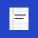

StudioControllo del blocco…
Sessione di studio in corso: la sospensione torna disponibile quando finisce la sessione.
Si può sospendere solo fuori dalle sessioni di studio (per esempio durante le fasce programmate). Poi la protezione riprende se prevista.